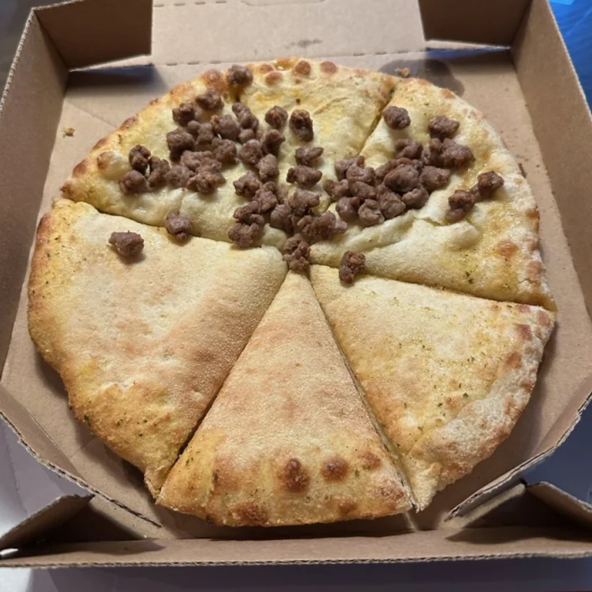

None Pizza (With Left Beef)

Description
As its name might suggest, none pizza with left beef
is exactly that; a pizza with no toppings on it, except for a
very sparse helping of beef on its left half.
Ingredients
- 1 pizza crust
- 2 tablespoons olive oil
- 1/2 teaspoon garlic powder
- 1/2 cup cooked beef, diced
Steps
-
Set your oven to 450°F
-
Place the pizza crust on a baking sheet or pizza stone.
Brush it lightly with olive oil.
-
Springle garlic powder evenly over the crust.
-
Sprinkle a small amount of diced beef onto the left half
of the pizza. WARNING: any attempts to place
the beef on the right side of the pizza will result in catastrophic
property damage, several lawsuits, and potential injury.
-
Put the pizza in the oven and bake for 8-10, or until the
crust is golden and crispy.
-
Cut the pizza into slices and feast upon your deliciously
iconic none pizza with left beef!